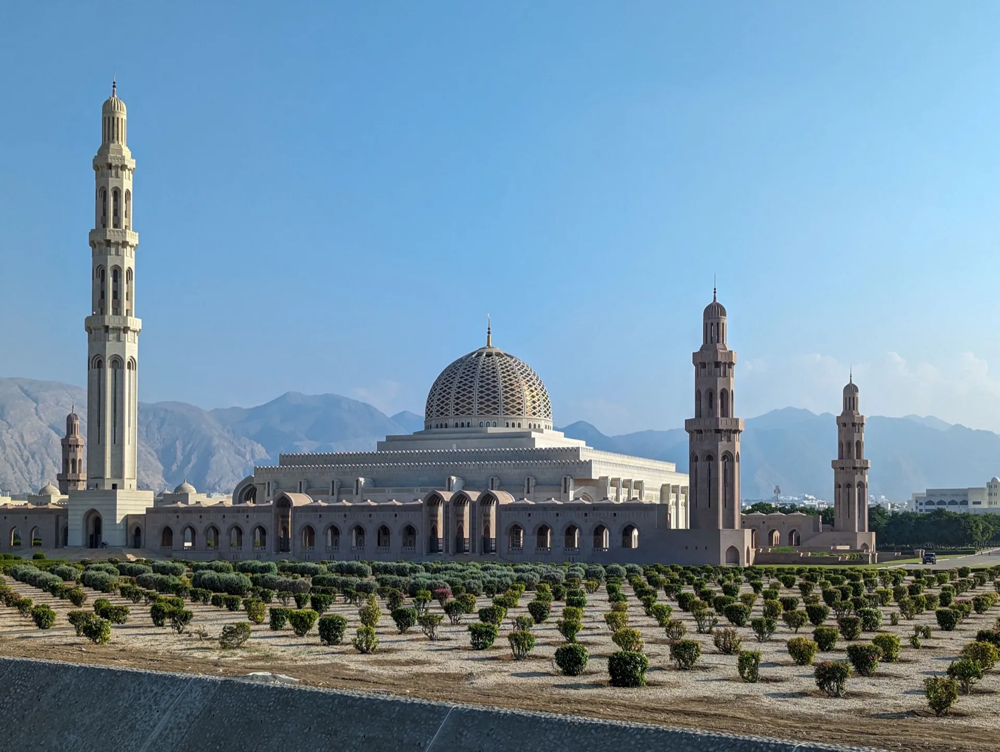

Muscat Escape: 4 days in Oman's capital
An easy introduction to Oman: the city's landmarks, the sea and a day to do as you please.

4 days / 3 nights · From $1,450 per person, twin-share, land only · Stay: Grand Hyatt Muscat (5★, Shatti Al Qurum)
Day 1: arrival in Muscat
Meet your driver at the airport and transfer to the Grand Hyatt Muscat in Shatti Al Qurum. Settle in and take it easy; if you land early, the beach and the Qurum area are close by.
Day 2: Muscat city tour
Visit the Sultan Qaboos Grand Mosque (it is open to visitors in the morning, except Fridays, so we plan it early), walk the Mutrah Corniche and browse the Mutrah Souq, then explore Old Muscat and Al Alam Palace. Our things to do in Muscat guide has the details.
Day 3: dolphin watching and snorkeling cruise
Head out by boat for about three hours to look for Oman's dolphins, with a snorkel stop in calm water. The rest of the day is yours.
Day 4: free leisure day
One day with no programme. Add a hike, a spa day, more souq time or a coastal drive, and we will arrange it. Depending on your flight, this day can also be your departure day.
This is an indicative day-by-day plan. We adjust the order, the pace and the hotels to your flights, your season and your interests, and confirm availability in your quote.
Quick answers
Is 4 days enough for Muscat?
Yes, for the main sights and a day on the water. For the coast, the mountains and the desert you need more time: see how many days to spend in Oman.
Can I add other activities?
Yes. Every itinerary can be adjusted, and the free day is the easiest place to add something.
What does the price include?
The package price is shown per person, twin-share, land only, so international flights are not included. We confirm exactly what is included in your quote.
Related pages
Want to see Muscat with us?
Tell us your dates and we will turn this plan into your trip.
Get Your Free Quote →